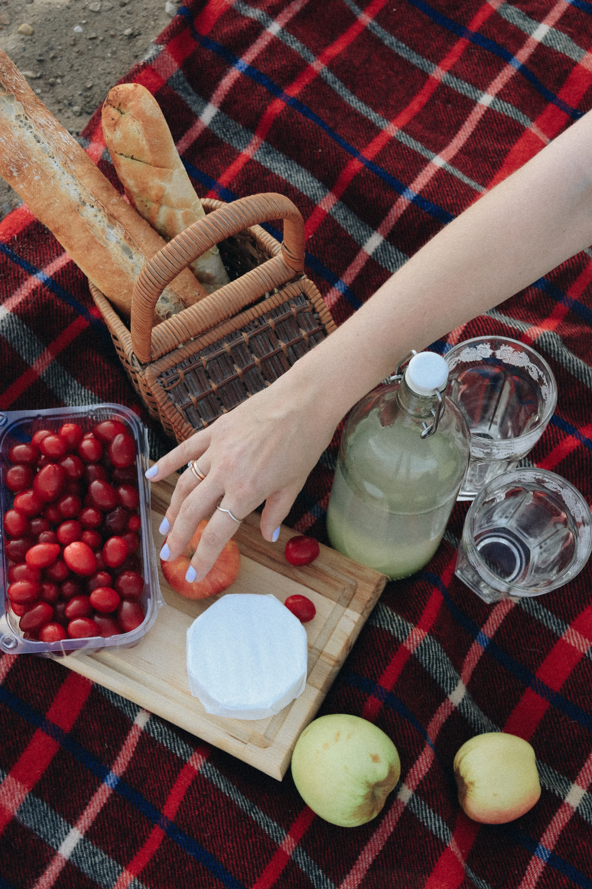

About Shome
SHOME Bakery, located at Pavilion 2, Bukit Jalil is a new, upscale bakery that focuses on providing organic, healthy, and premium baked goods. We also sell different varieties of desserts such as cakes, cookies, pies, ice cream, and pastry. During this COVID-19 pandemic, SHOME Bakery will provide desserts delivery service and digital payments service via our official website.
SHOME Bakery's History
Upon returning from Italy and surveying the local customer base,it showed a potential retail location, Yong QI incorporated SHOME Bakery as an S-Corporation on 15th October of 2019. The business is currently being run out of Yong Qi's home office, but once the lease SHOME Bakery's retail location is finalized, all operations will be run from there.
What's good about Shome's products?
- 
SHOME Bakery is a bakery that promotes a way of healthier life. All of the ingredients used by us are gluten-free, dairy-free and plant based.
Furthermore, SHOME Bakery has also provided custom-make service. Customers can customize their own cake.
Moreover, SHOME Bakery used the fresh fruit and high-quality ingredients to process the dessert in order to ensure the desserts are freshly-baked.
Advantage
- Health ingredients — Reduce mental health issues, boost energy and are suitable for the people of all ages.
- Custom-make Service — Customize own cake, make your day more delightful and memorable.
- Fresh — All of the desserts are processed within 3 days to keep their original taste.